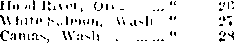

Published Semi-Monthly By
WATCH TOWER BIBLE €> TRACT SOCIETY 117 Adams Street - Brooklyn, N. Y., U. S. A.
OFFICERS
J. F. Butherfokd President W. E. Van Ambubgii Secretary “And all thy children shall be taught of Jehovah; and great shall be the peace of thy children.”* Isaiah 54:13.
THE SCRIPTURES CLEARLY TEACH
THAT JEHOVAH is the only trua God, 13 from everlasting to everlasting, tho Maker of heaven and earth and the Giver of life to his creatures; that tho Logos was the beginning of his creation and his active agent in the creation of all things; that tho Logos is now tho Lord Jesus Christ in glory, clothed with all power in heaven and earth, and tho Ciiief Executive Officer of Jehovah.
THAT GOD created tho earth for man, created perfect man for the earth and placed him upon it; that man will ally disobeyed God’s Jaw and was sentenced to death; that by reason of Adam’s wrong act all men aro born tinners and without the right to life.
THAT JESUS was mado human, and the man Jesus suffered death in order to produce tho ransom or r< dmnptiva price for all mankind; that God raised up Jesus dnino and exalted him to heaven above every creature and above every name and clothed him with all power and authority.
THAT JEHOVAH’S ORGANIZATION is called Zion, and that Christ Jems is tho Chief Of.icer thereof and is tho rightful King of tho world; that tho anointed and faithful followers of Christ Jesus arc children of Zion, members of Jehovah’s organization, and aro his witnesses whose duty and privilege it is to testify to the supremacy of Jehovah, declare his purposes toward mankind as exp.essed in the Bible, and to bear tho fruits of the kingdom before all who will hear.
THzSTTIIE WORLD lias ended, and tho Lord Jesus Christ has been placed by Jehovah upon Iris thiono of authority, has ousted Satan from heaven and is proceeding to tho -cstablisliment of God’s kingdom on earth.
THAT THE RELIEF and blessings of the peoples of earth can coma only by and through Jehovah’s kingdom under Christ which has now begun; that the Lord’s next great act is the destruition of Satan’s organization and the establishment of righteousness in the earth, and that under the kingdom all those who will obey its righteous Jaws shall Jive on earth forever.
ITS MISSION
HIS journal is published for tho purpose of enabling the people to know Jehovah God and his purposes as express! d in tho Bible. It publishes Bible instnrtion specifically designed to aid Jehovah’s witnesses. It arranges systematic Bible study for its readers and supplies other literature to aid in such studies. It publishes suitable material for radio broadcasting and for other means of public instruction in tho Scriptures.
It adheres strictly to the Bible as authority for its utterances. It is entirely free and separate from all parties, sects or other worldly organizations. It is wholly ami without reservation for the kingdom of Jehovah God under Christ his Beloved King. It is not dogmatic, but invites careful and critical examination of its contents in tho light of tho Scriptures. It docs not indulge in controversy, and its columns aro not open to personalities.
Yearly Subscription Price
United Stives, $1.00; Canada ano MiscimLANEOVS Foeeicn, $1.50; Geuit Britiin, Australasia, a'.d South Ari.tr v, 7s. American remittumes should be made by Lvprcss or I’o-til Money Older, or by Bunk Draft. Canadian, L’llthb, South African mid Australasian rcmiltances should ba made direct to the re- pc< tiro branrli offices. Remittances from romrtiics other than the >1 men-tioni'd may be made to tha Brooklyn ollicc, but by International Postal Honey Order only. '
Foef.ign Offices
British .......... 31 Craven Terrace, London, W. 2, J'nglnnd Canadian ....... 40 Irwin Avrn.ie, Toronto, Ontario, (’. n.ida A ustrata’.lan . . 7 Beresford Road, Str.itliib Id, N. S. W., Au-tiaiia South African .... Boston Hou'-e, Cape Town, South Africa Please address the Society in every case.
(Translations of this journal appear.in several languages.)
All sincere students of tho Bible who by reason of Infirmity, povtrly or ud.irsity aie unaLlo to pay the sub-criptmii pri<0 may have The ttatektoucr frie upon written application to the publishers, made onco each jeir, stating tho re.i-on for io requesting it. We are gl id to thus aid tho needy, but fno wntten application omo each >ear is required by the postal rcml.itions. Notice to Subscribers: Acknowledgment of a new or a renewal subscription will bo sent only v ben leqiro tod. Clinnce of mldrcss, when requested, may bo expected to appeal on nddri ss lain I within one month. A rcncma1 blank (carrjing notice of evprnfion) will be sent with the journal one month before the subscription n.piios, Entered as Second Class Mail Matter at Brooklyn, N. Y., Po'tofilee.
Art of March 3, 1313.
"ZEAL OF HIS HOUSE” TESTIMONY PERIOD
The nine-day period, .lune 0 to 11 inclusive, is thus designated and indicates another of those seasons of special united activity on the part of Jehovah's visible organization on eaitlu Uncomplaining, and with unflagging zeal, all those gathered at the house of God, whether ot the anointed remnant in the inner court or of the Jonadabs in the outer court thereof, will participate in tho oppoitunitics of tins testimony period. Organi-zatiun instructions are that, on a contribution of 35c, the book Rictus together with thiee booklets (one a paper- oi self-covered booklet) shall he olfcied to tho public, and that the rural sections of your temtory shall be given the preference this time. Weather ami other conditions should by thou be very favorable for su'h rural work. The zeal which is peculiar to those of and at God’s house piompts every one to take under consideration at once his part, in this coming testimony period. Your report on work done should be made to our Brooklyn office if vou are not working in territory under one of our bi .inch offices.
LITERATURE FOR THE BLIND
Of the new series of booklets, Du tiling the people, Hereafter, Cause of Du.th, JI ho Is God? and fill'll Is 7 iii'hf can be supplied, in Bn.ilia, for the blind. Tlte~e are obtainable at $1 a copy, or may be had on loan by any blind render. Address the Soeietvlu:>r.<h fur the blind, lulO b’pear Ht., Logansport, Ind,
TRANSCUIPTION MACHINES AND SOUND CARS
The Society constructs and assembles portable transcription machines at cur own factory at 117 Adams St., Brooklyn, N. Y. These machines are spring-wound, and operated itom a <> volt wet-cell battery Every machine is furnished complete with the battery and a battery charger, so that rt can be Kept up to its full strength. This machine can be ofiered at $100, complete, to brethren in the United States.
The sound car equipment includes the above and, additionally, a power amplifier and a horn with mountings tor the top of your car. The entire sound car equipment with microphone attachment can be had for $175. Write to the Society ioi details.
ANNOUNCING COMPANY MEETINGS
Many hearers of radio trausenption lectures hare the desire to meet with Jehovah’s witnesses and to study hrs Won! with them, lienee wheicvei the kingdom mo-sage is irnlioi -st, the time and place of meeting of the local company of .L'Lo.rh’s witnesses should be announced r.ittr the transenptmn. The time on the air being paid for, the station manager uinht to readilv grant your i-.qui>-t to make such announcement.
Vol. LVII
May 15, 1936
No. 10
“And Aaron shall cast lots upon the two goats; one lot for the Lord, and the other lot for the scapegoat.” ‘‘But the goat, on which the lot fell to he the scapegoat, shall be presented alive before the Lord, to make an atonement with him, and to let him go for a scapegoat into the wilderness.”—Lev. 16: 8,10.
JEHOVAH constituted Moses his spokesman or medium of communication to give instruction to the Israelites. Moses was Jehovah’s superior priest, foretelling Christ Jesus, the Chief Officer of Jehovah Cod. Aaron, the brother of Moses and high priest to Israel, was commanded to perform certain service on the day of atonement, and in this he also pictured Christ Jesus. Jehovah commanded Moses to direct Aaron as to what he should do on the day of atonement, among which was that Aaron should present two he-goats before the Lord: “And he shall take of the congregation of the children of Israel two he-goats for a sin offering, and one ram for a burnt offering.” (Lev. 16:5, A’.V.) One of the goats was offered for a sin offering, while the other goat was sent away alive “for a scapegoat into the wilderness”. The Lord’s goat represented those who become joint sacri-ficers with Christ Jesus. Did the scapegoat represent or foretell the “great multitude” class that ‘die unwillingly’ but are ‘forced into death’? The Scriptural answer to this question is in the negative. For a long while the consecrated have proceeded upon the theory that the scapegoat pictured the great multitude or a secondary class. The Scriptures do not warrant that conclusion. The great multitude is not a spirit-begotten company, but is made up of those “other sheep” of the Lord Jesus which he brings into his fold during the period of judgment at the temple now in progress. It is not a company that is partially faithful, because Jehovah does not approve a halfway faithful creature. The great multitude is not a company of persons ‘who through fear of sacrificial death are held in bondage all their lifetime’. What, then, was pictured by the scapegoat? The scapegoat prophetically pictured or foretold a spirit class that form the “evil servant” class, the members of which go into perdition. The Scriptural argument in support of this conclusion follows.
2 The Scriptures that determine the different uses to which the two goats were put are these, to wit: “For the life of the flesh is in the blood; and I have given it to you upon the altar, to make an atonement for your souls; for it is the blood that maketh an atonement for the soul.” (Lev. 17:11) “We have an altar whereof they have no right to eat which serve the tabernacle. For the bodies of those beasts, whose blood is brought into the sanctuary by the high priest for sin, are burned without the camp.” (lleb. 13:10,11) The Lord's goat was killed and the blood thereof was sprinkled upon the mercy scat in the Most Holy. The blood of the seapegoat was not used or offered for any purpose anywhere.
3 Aaron, the high priest, presented the two goats, bringing them into the court before the tabernacle. In this Aaron was a type of Chiist Jesus, the high priest of Jehovah. These two he-goats described in Leviticus 1G: 5 were selected from amongst the goats in possession of the Israelites. The antitypical great High Priest, Christ Jesus, began the selection of the two antitypical goats in the day of the apostles. That work of selection must continue until the required number of the Lord’s goat class is selected and offered before Jehovah. The two goats taken from the congregation of the Israelites were at the expense of that people. The Israelites pictured humankind sicking reconciliation with God and out from which certain ones are taken to be offered up with Christ Jesus. Loth of the goats were selected and in line to be used for the sin offering, but only one of the two goats was actually used as an offering for sin, and that one was ea'lcd “the goat of the sin offering”.—Lev. 16:15.
* The two goats Aaron brought into the court that surrounded the tent of the tabernacle and there presented them before the Lord. “And he shall take the two goats, and present them before the Lord at the door of the tabernacle of the congregation.” (Lev. 16:7) At this point the two goats pictured all those during the period of sacrifice who consecrate themselves to do the will of God and whom God justifies. This period of sacrifice began with the Lord Jesus and the apostles and continues until all the members of the body of Christ are selected. The fact that both arc in line for the sin offering is shown by the law-covenant sacrifice, which required both goats to be without blemish. The justified man stands before God as approved and is fit to be offered as a sacrifice before the Lord. (Lev. 22:21,22) The two goats in the court therefore pictured the justified and spirit-begotten class in the entirety, for the reason that God’s granting justification to men during the period of sacrifice is for the very purpose of qualifying them as his sons to be in the. sacrifice with Christ Jesus. All at this point arc very much alike so far as outward appearances go. Their selection takes place by reason of their sincerity of heart, and this is done not by words only, but by the course of action taken by each one. To men it would be impossible to tell just who is acceptable, because men look at the outward appearance. “The Lord seeth not as man secth; for man looketh on the outward appearance, but the Lord lookcih on the heart.” (1 Sam. 16:7) The selection is made, then, based upon the real inward condition. The judgment takes place, when the Lord Jesus appears at the temple for judgment. (1 Pet. 4:17; Mal. 3:1-3) Prior to that time the two goats are merely in the court by representative members who are consecrated, and not yet presented before the Lord for judgment. Jehovah is the great Judge, and he docs the judging by his duly commissioned representative to whom he has committed all judgment in heaven and in earth, namely, Christ Jesus.—-John 5:22,27.
in
“All the consecrated and spirit-begotten ones pictured by the two goats in the court go on together until the time of judgment and separation. The command to the hieh priest shows how the separation takes place, and that is by the casting of lots. “And Aaron shall cast lots upon the two goats; one lot for the Lord, and the other lot for the scapegoat.” (Lev. 16: 8) The separation is not arbitrary, nor does Christ Jesus judge arbitrarily, but he judge's according to God’s law which directs him. “I can of mine' own self do nothing: as I hear, 1 judge: and my judgment is just; because I seek not mine own wdl, but the will of the Father which hath sent me.”—John 5:30.
8 The consecrated ones pictured by the two goats are not predestinated or fated by Jehovah without regard to the wishes or conduct on their part. The course of action of each individual determines the class into which he will be put, and the heart condition is the real determining factor. Like the ten virgins who are associated together until the time of separation, so all the consecrated are shown in the picture heie under examination. (Matt. 25:1,2) The priest casts the lots, the casting of which lots shows that the selection is not arbitrary. “The lot is cast into the lap; but the whole disposing thereof is of the Loid.” (Prov. 16; 33) The class that are sincere and wholly devoted to the Lord, and hence are in the right heart condition, become the Lord's goat to he made a part of the sin offering, and those who are moved by selfishness are pictured by the scapegoat.
r The one designated or selected by the casting of lots as the Loid's goat is offered as a sacrifice. “And Aaron shall bring the goat upon which the Lord’s lol fell [upon which the lot fell for the Lord (U.V.)], and offer him for a sin offering.” (Lev. 16:9) The consecrated, spirit-begotten ones that are wholly and unselfishly devoted to God stand on the side of Jehovah and firmly hold that position regardless of all outside influence. They are not selfishly looking for reward, but are looking to God for his approval, and hence thev’ devote themselves faithfully to God. Their faithfulness and the maintenance of their integrity toward God results in their fulfillment of their covenant with him by sacrifice. (Ps. 50: 5) These, pictured by the Lord’s goat, are accepted as joint saerificers with Jesus, the sin-bearer, and therefore, as it is written of them, they “are buried with him by baptism into [his] death”. (Rom. 6:4) It is only those who share in the sacrificial death with t.'hiist Jesus that live and reign with him. “It is a faithful saying: For if we be dead with him, we shall also live with him: if we sutler, we shall also reign with him: if we deny him, he also will deny us.”—2 Tim. 2: 11,12.
8 The class pictured by the other goat, by leason ol’ the course of action taken by such, is turned over to the Devil. “Put the goat, on which the lot fell to be the scapegoat, shall be presented alive before the Lord, to make an atonement with him, and to let him g<» for a scapegoat into the wilderness.” (Lev. 16: 10) Tbi■» text in the American flcciscd Version reads: “But the goat, on which the lot fell for Azazel, shall be set alive before Jehovah, to make atonement for him, Io send him away for Azazel into the wilderness.” The Hebrew woiil here rendered “Azazel” does not mean a wilderness to which the goat is sent to escape (hath, and it does not mean that this class of persons, because of their fear of a sacrificial death, are si.bjict to bondage. Clearly the word Azazel means a pci.-on or creature in opposition to Jehovah, and which creature is Satan the Devil. By the selfish course of action taken by this efims, represented by the seapegoat, they stand on the side of the Devil, and not beeau.-e the Lord arbitrarily so determines. The Lord judges them according to the selfish course taken and manifested by them. The heart condition and course of mtion taken automatically put them in the scapegoat class according to Jehovah’s unchangeable Jaw. These are not offered, but arc “presented”, that is, “set alive.” before the Lord that attention may be called to Ilie fact that this goat has not fulfilled the covenant with Jehovah by sacrifice but is alive contrary to the terms of that covenant. The judgment or decree is then with Jehovah as to what shall be done with that “liv e goat.”.
0 As will be observed, the Authorized Version says this goat shall be “presented alive before the Lord, to make an atonement with him [the goat] ”. But that could not be correct, for the reason, be fails to qualify for that purpose. The Revised Version reads: '“To make atonement for him”; and according to Rotherham, “To put a propitiatory covering over him.” Atonement cannot be made with this goat, bwaw its blood was not slnd; an atonement is made by >' e lifeblood only. Therefore it is seen that the Revised Version and Rotherham renderings of the text must be correct, and these renderings, together with the following texts, show that it is correct, to wit: “For the life of the flesh is in the blood; and I have given it to you upon the altar, to make an atonement for your souls; for it is the blood that inaketh an atonement for the soul.” (Lev. 17:11) “And almost all things are by the law purged with blood; and without shedding of blood is no remission.” (lleb. 9:22) “For the bodies of those beasts, whose blood is brought into the sanctuary by the high priest for sin, are burned without the camp.” (Ileb. 13:11) These texts prove conclusively that no atonement is made with. the live goat, because its blood is not shed. “Atonement for him,” according to the Revised Version rendering, must mean this: That the “live moat” class originally had been presented before Jehovah that it might have opportunity to participate in the great atonement day sacrifice, and that it had been brought under the atoning sacrifice of Christ Jesus and justified by Jehovah God that such might have part m the sin offering. Before the disposition was made of this goat the bullock was slain and its blood sprinkled upon the mercy seat before the Lord, thus showing atonement made by the great antitypie.il bullock. The “live goat” was presented before the Lord for the determination of its case thereafter, thus showing tiiat atoning power of the bullock’s blood had been made available for this goat class, but now this “live goat” class shows that it had received this grace of God in vain and was doing despite unto lire spirit of the grace of God.—2 Cor. G: 1; JIeb. 10: 29.
10 There was nothing done with this live goat thereafter that shows an atonement, was made “with it”. On the contrary, it was “set alive [not slain] before Jehovah, ... to send him away for Azazel”. (A.R.V.) Having received the grace of God in vain there is no other place to send him and he is sent away out of God’s organization and unto Satan, that is, ‘delivered over to Satan.’ (1 Cor. 5: 5) Then it is with that scapegoat class as it was with Judas: “And after the sop Satan entered into him.” (John 13:27) The class pictured bj- the live goat wanted to live and be fiee and not be “subject unto the higher powers”, namely, Jehovah God and Christ. Accordingly it is given all the freedom of action it wants, but not in God’s organization. It is given freedom of choosing its own course of action with Satan and his organization. Those of that class cry out for “freedom”, and they get it. The wilderness docs not necessarily signify a place or condition of violent death of the scapegoat class at the hands of Satan and his agents, but rather a condition void of all light of truth, a condition of outer darkness and destruction.—Matt. 13: 42; 25: 30.
‘ATONING WORK’
11 The work of the atonement day progressed in this manner: The two he-goats were brought into the court that they might be in line to be offered as a sin offering. The lots were cast by the high priest, and one of those lots fell on the goat that was set before Jehovah to send away for Azazel. But before so sending him away the work of atonement by the blood of the bullock and the blood of the Lord’s goat must first be done. In the type the bullock wrns first slain and its blood carried into the holy place (the Most Holy) and there sprinkled upon the mercy scat. Then the Lord’s goat was slain and the priest did with the blood of that goat “as he did with the blood of the bullock”. Thus the priest makes atonement for himself and for his household and for all the congregation. Then the high priest “shall go out unto the, altar”, that is in the court, and make atonement for it, pulling the blood of the bullock and the blood of the Lord’s goat on ihe horns of the altar and round about the altar. —Lev. 16:12-19.
12 After his doing as directed and as described in verses twelve to nineteen above, then the “live goat” or scapegoat i> disposed of; as it is written: “Ami when he hath marie an end of reconciling [atoning for (Zi'.F.)] Ihe holy place, and the tabernacle of the congregation, and the altar, he shall bring the live goat.”—Luke 16:20.
13 Antitypically this marks the coming of the Lord Jesus Christ straightway to the temple for judgment, and a part of his work there is the cleaning out or cleansing of the sanctuary and separating the faithful remnant from the “evil servant”, the “man of sin” class. The bringing of the live goat and sending him forth for Azazel pictures the “evil servant” class, the chief of that class which is the “man of sin”. This class is made up of spirit-begotten ones who were once in lino for the kingdom. The scapegoat at this point pictures all those who during Ihe great atonement day entitypieally have been justified and spirit-begotten and who have proved unfaithful, the disposing of which class takes place when the Lord Jesus is at the temple conducting judgment. What was done at the tabernacle was typical of what should come to pass at the time of the end of the world. (1 Cor. 10:11) That means at the time that the Lord Jesus appears at the temple for judgment.
11 Aaron the high priest then made the public statement in the presence of the congregation of Israel concerning the “live goat” or scapegoat. “And Aaron shall lay both his hands upon the head of the live goat, and confess over him all the iniquities of the children of Israel, and all their transgressions in all their sins, putting them upon the head of Ilie goat, and shall send him away by the hand of a fit man into the wilderness.”—Lev. 16:21.
15 The action of Aaron toward the “live goat” doos not at all signify that the scapegoat was to stand for or take the place of the priest and his house in doing atonement work. Rather it shows the time when the holy spirit as helper and advocate is bring taken away and when Christ Jesus takes full charge of all the consecrated at the temple and disposes of all spirit-begotten ones and when “the man of sin’’ is being revealed. (2 Thess. 2:1-10) Aaron's both hands upon the head of the live goat shows that the full power of Christ Jesus, the great High Priest, is directed toward the scapegoat class to reveal and expose the same, and shows the reason why this unfaithful class should be sent out of God’s organization. The head represents the place where responsibility rests, so that the “live goat” could not plead ignorance and use that as an excuse. At Isaiah 58:1 the command is given that those of the spirit-begotten class must have the matter brought to their attention, which the Lord does that they may not plead ignorance. The priest's confessing over him, the live goat, shows that he makes public proclamation or declaration, and not that he makes allowance for or is condoning rebellion and disobedience and the compromising of that class with Satan’s organization. It means that the true situation of this class must be made known.
” Both of the goats were taken from among the children of Israel, but the live goat had not faithfully served the Loid. Likewise both antitypical goats were taken from the people who turned to the Lord and are consecrated to the Lord, but the “wicked servant” proves unfaithful and receives God’s grace in vain and has not faithfully served God’s interests amongst the antitypical Israelites but has caused many of them to sin. They are therefore workers of iniquity or lawlessness. Such iniquities consist of alliance with Satan’s organization, becoming ‘spotted with the world’, and thus conniving at and consorting with the world or Satan’s organization to do violence to and to oppose God’s organization. Such are covenant breakers and arc worthy of death.—Rom. 1: 30-32.
17 Both goats had been brought up and offered for the Israelites, but since the scapegoat had failed to so act as to be a sin-bearer in behalf of the people, therefore the ‘confessing over him of the iniquities’, as stated in the text, could not transfer the sins from the people to the scapegoat and thus make it a public benefactor. The live goat therefore did not make atonement for anyone. Furthermore, those sins which the priest confessed over the live goat must be sins other than those wiped out by the atoning blood offered on the mercy seat, because the sins thus atoned for, the Lord docs not again bring to mind. “As far as the east is from the west, so far hath he removed our transgressions from us.” (Ps. 103:12) “Their sins and their iniquities will I remember no more.” (Tkb. 8:12) The sins and iniquities are put on the head of the scapegoat class because that class failed to warn the people as commanded. (Ezek. 3:17-20) They fail to protest against the wrongful acts of Satan’s representatives committed against Jehovah's witnesses. Jesus states the same rule in these words: “Therefore he that delivered me [Jehovah’s true witness] unto thee [the enemy for execution] hath the greater sin.” (John 19:11) Concerning these unfaithful covenant breakers, the “live goat” or scapegoat class, it is written: “And ye shall leave your name for a curse unto my chosen [ones].” (Isa. 65:15) Thus the “live goat” class are identified as the chief sinners on earth and those composing that class are called the “man of sin”, “the son of perdition.”—2 Thess. 2:3.
1S Concerning the scapegoat class it is written: “Woe unto the world because of offences! for it must needs be that offences come; but woe to that man by whom the offence comcth! ” (Matt. 18:7) “But if they had stood in my counsel, and had caused my people to hear my words, then they should have turned them from their evil way, and from the evil of their doings.” (Jcr. 23:22) The scapegoat class docs not turn out to be a benefactor of the people by taking the punishment upon their shoulders, but as a class injurious to the people by reason of unfaithfulness to God and disobedience to his commandments. This scapegoat class is sent away from God’s organization and from him for ever. Says the text: “Shall send him away by the hand of a fit man,” an appropriate man, therefore an unclean man. Thus is pictured a class of unclean ones on earth to whom Jehovah releases and turns over the scajK'goat class, and these are led away to the Devil. The scapegoat class, probably first by indifference, and then by a positive and a willing course of action, become the associates with the unclean class and thus take a positive stand against God and his organization. The scapegoat class therefore goes aw ay from God’s organization and becomes a part of the world, or Satan’s organization, and is thereby dragged away directly to the Devil. Many took exactly that course shortly’ after the coming of the Lord Jesus to the temple. (Zech. 14:2) The scapegoat class, as the record shows, was led away “into the wilderness”, which would necessarily’ be outside of the camp of God’s people for whom atonement had been made, and away from those in line for reconciliation with God. The wilderness picture's that condition where there, is no life-sustaining food and no water of truth io quench the thirst of those W'ho desire and love righteousness. It is that condition of darkness and alienation from God and his redeemed ones inhabited by the Devil and is clear outside of divine provision for sin atonement by Christ Je-ais. Out there in that condition such are fully free to seek whatever selfish pleasure they may desire. The murmurers, coinplaincrs and rebellions ones against the law' or instruction of God’s organization put themselves in the position to be thus led away. “These are murmurers, complainers, walking after their own lusts; and their mouth speakelh great swelling words, having men’s persons in admiration because of advantage. But, beloved, remember ye the words which were spoken before of Ihe apostles of our Lord Je-us Christ; how that they told you there should be mockers in the last time, who should walk after their own ungodly lusts. These be they who separate themselves, sensual, having not the spirit.” (Jude 16-19) Sueh are outside of God’s guidance and without his protection.
10 Further support is given to this conclusion by the words, to wit: “And the goat shall bear upon him all their iniquities unto a land not inhabited [(murpiii) a land of separation].” (Lev. 16:22) Those of the scapegoat class are led away into a condition separated from the people of Gods camp or organization. Being taken to the wilderness does not suggest the possibility of the scapegoat class’ being recovered and reinstated in God’s organization. “It is a fearful thing to fall into the hands of the living God.”(Hcb. 10:31) The true meaning of this prophetic picture must be determined by the facts that clearly appear in fulfillment of the prophetic picture. The Scriptures and the facts will not warrant tLe conclusion that God dismisses the sins of humankind into the wilderness of oblivion, and that the scapegoat class is the agency God uses to accomplish this. It is entirely unreasonable and un-scriptural that God would permit covenant-breakers and unfaithful ones to bear the iniquities of others willingly committed, and thereby make that class pictured by the “live goat” fit for a place in heaven as servants of the elect class. The “great multitude” i> not taken into consideration in this atonement-day prophetic picture involving the two goats. The great multitude are not spirit-begotten and never in line to be joint sacrificers with Christ Jesus. The scapegoat does not represent the great multitude in any way.
20 When he appears at the temple the Lord Jesus begins the cleansing work, and a part of that work is to clear out the wicked, that is, those who have not a pure heart. The ousting of the rebellious ones continues, and everyone who becomes an offender, murmurcr or complaincr against God and his organization is cleared out; and this is also pictured by the angels of the Lord on guard at the temple preventing the wicked from entering and putting out those who corrupt themselves by selfishness and a selfish course of action. If anyone would remain in the temple he must keep the commandments of Jehovah and forget not the law of his organization, because sueh is the commandment of the Lord: “31y son, keep thy father’s commandment, and forsake not the law of thy mother.”—Prov. 6:20.
21 God has placed certain ones in the body to carry out his purposes, and it devolves upon sueh to transmit organization instructions to others. Those who complain, murmur or rebel against organization instructions are in fact complaining, murmuring and rebelling against the Lord. Every servant of the Lord must stand or fall to his own master, and not to some other one. “Who art thou that judgest another man's servant? to his own master he standeth or falleth. Yea, he shall be holden up: for God is able to make him stand.”—Rom. 11:4.
22 One in the service in God’s organization rebels against organization instructions and defies the organization and sets himself up in opposition. Such is rebellion against the Lord, because it is the Lord’s organization, and if his servants are going wrong the Lord will attend to them in due season. Even at this late date there are those who rebel and who enter into conspiracies against the Lord’s organization and, moved by some ulterior selfish desire for the honor of men, seek to justify themselves and to create sentiment in their own favor. Sometimes an ambitious one inveigles others into the conspiracy, hoping to draw away supporters for himself. Recently one who has openly rebelled against the Society writes to his supposed friend, using these words: “The issue is the same as it was two years ago as we discussed it then, wnethcr we would bow down to and fear a man, or honor Jehovah and Him alone. ... At least seven men recognized this is.->ue and made a covenant and agreed to face it in loyalty to Jehovah and not fear a man, but when the test came the same fear s. cms to have arisen.” The writer of the above-quoted words, while in the service of the Society, repeatedly complained against various ones in the organization because they were carrying out assigned iii'-truetions and doing faithfully the service assigned to them, 'flic complaincr often resorted to scolding and indulged m browbeating the brethren at various times and sought to use his posit ion in the Society to gratifying his own selfish desires. But the Lord stopped him in due season. From his above-quoted wolds it appears that otheis were in the conspiracy with him, and doubtless the Lord in his own good time and way will give them the needed attention. There arc no bosses in God's visible organization, and there is no reason for anyone who is unselfishly devoted to God to fear any man. There is not even any occasion to think about feanng man. With equal certainty no one wholly devoted to the Lord will enter into a conspiracy against another m the organization of the Lord. Those of impure he.ut, that is, of selfish motive, arc the ones that enter into conspiracies. They deceive themselves and deceive otheis, but the Lord knows the secrets of the heart, and judges accordingly. One of an impure heart will not be permitted to remain in God’s organization; therefore it is written: “Keep thy heart with all diligence ; for out of it are the issues of life. ’ ’—Prov. 4: 23.
DELIVERED TO SATAN
23 As the scapegoat was smt away to Azazel, so it appears that there have been those of the scapegoat class throughout the period of sacrifice that have turned away to the Uevil, although the picture i« especially fulfilled when the Lord comes to the. temple. The apostle Paul was clothed with special authority from the Lord, including the power to turn away rebellious ones to Satan. Tn giving admonition and instruction to Timothy Paul wrote: “Holding faith, and a good conscience; which some having put av.ay, concerning faith have made shipwreck: of whom is Hymenteus and Alexander; whom I have delivered unto Satan, that they may learn not to blaspheme.” (1 Tim. 1:19, 20) It is made certain that the Lord does not tolerate willful opposers in his organization; and this is shown by what is written: “But shun profane and vain babblings; for they will increase unto more ungodliness: and their word will cat as doth a canker; of whom is Hymenaeus and Philetus; who concerning the truth have erred, saying that the resurrection is past already; and overthrown the faith of some. Nevertheless the foundation of God standeth sure, having this seal, The Lord knoweth them that are his. And, Let every one that nameth the name of Christ depart from iniquity [lawlessness].”—2 Tim. 2:16-19.
2t Writing to the Christians as a body of God’s people the apostle calls attention to wrongdoers amongst them, naming the deeds of fornication, idolatry, wrath, envyings, drunkenness, and suchlike. (1 Cor. 5:1,2; Gal. 5:19-21) Such are pointed out as unclean and having power to defile and to “leaven” others of the Christian company with the sins of insincerity, malice and wickedness. (1 Cor. 5: 6-10; 2 Pet. 2:18,19) Concerning such wrongdoers and the proper attitude of the faithful Christians toward such, the apostle wrote: “1 wrote unto you in an epistle not to company with fornicators; yet not altogether with the fornicators of this world, or with the covetous, or extortioners, or with idolaters; for then must ye needs go out of the world. But now I have written unto you not to keep company, if any man that is called a brother be a fornicator, or covetous, or an idolater, or a railcr, or a drunkard, or an extortioner; with such an one no not to eat.”—1 Cor. 5:9-11.
23 Having reference to these workers of unrighteousness, the apostle says: “For I verily, as absent in body, but present in spirit, have judged already, as though I were present, concerning him that hath so done this deed; in the name of our Lord Jesus Christ, when ye are gathered together, and my spirit, with the power of our Lord Jesus Christ, to deliver such an one unto Satan for the destruction of the flesh, that the spirit may be saved in the day of the Lord Jesus.”—1 Cor. 5:3 5.
20 The admonition to the faithful ones is to put away the wicked and put them in a place whore they belong and to have nothing to do with such. The same rule applies to all kinds of opposition to and attempts to defile God's people and to bring about a division thereof. (Rom. 16:17,18) The apostle directs such course, that is, that the faithful put away the workers of iniquity, “that the spirit may be saved in the day of the Lord Jesus.” Those words do not refer to the saving of the spirit of the wicked one, as contrasted with his fleshly organism, but means that the spirit of the church, which is the spirit of the Lord Jesus Christ, and which his true followers will have, should be maintained, preserved and kept in the Lord’s approval, that the body of Christians might be approved in the day of the Lord Jesus and -when he appears at the temple.
27 Had the acts of the wrongdoers been condoned the entire body of Christians would have been contaminated. “For he that soweth to his flesh, shall of the flesh reap corruption; but be that soweth to the spirit, shall of the spirit reap life everlasting.” (Gal. 6: 8) “For to be carnally minded is death; but to be spiritually minded [the minding of the spirit (margin)] is life and peace.” The admonition is to shun the wrongdoer that the spirit of Christ may be preserved in the church unto the coming of the Lord Jesus for judgment. The condition existing in the church at Corinth was dangerous to the life thereof, and that body was urged by the apostle to take due action to purge itself of wrongdoers. “Your glorying is not good. Know ye not that a little leaven leavencth the whole lump? Purge out therefore the old haven, that ye may be a new lump, as ye are unleavened. For even Christ our passover is sacrificed for us.” (1 Cor. 5: 6, 7) The words of the apostle subsequently written indicate that the body of Christians at Corinth followed his admonition and that the wrongdoer mentioned fully repented and turned to the Lord. (2 Cor. 2: 5-11) Thus the spirit of the church was preserved and shows that, such should be the course of those who receive the Lord's approval at his coming to the temple in 1918 for judgment and cleansing of the consecrated. Tn cleansing the sanctuary the great Refiner, Chi ist Jesus, would not destroy the blameless spirit from amongst the sanctuary class, but would preserve and save it until the earthly work of the anointed is done. It is then that the Lord gathers out the offending or lawless ones so that the entire body is clean and whole.
28 When the Lord Jesus, the great High Priest, appears, lie is clean, pure and holy and appears in gloiy as the representative of Jehovah. The 1\ pc shows that even before the reproaches cease which have fallen upon his name and upon his footstep followers, Christ Jesus must appear in glory and in power, and this is made manifest in Hie type by the action of Aaron; as it is written: “And Aaron shall come into the tabernacle of the congregation, and shall put off the linen garments which he put on when he went into the holy place, and shall leave them there; and he shall wash his flesh with water in the holy place, and put on ids garments, and come forth, and offer his burnt offering, and the burnt offering of the people, and make an atonement for himself, and for the people.”—Lev. 16:23, 24.
29 Aaron came forth clothed in his garments of glory and beauty, and thus pictured Christ Jesus appeal ing at the temple in glory and beauty as the Messenger of Jehovah’s covenant and as a ‘covenant for the people’. Aaron then offered “his burnt offering”, which was for himself and his house, “and the burnt offering of the people.” This burnt offering for the people prophetically pictured God's acceptance of the sacrifice and sin atonement which preceded. Such acceptance is now manifested by bringing the remnant members of the body of Christ, which are now on earth, to completeness and the giving to them of the “new name”, and using them for the closing work of the period of sacrifice and for the proclaiming of the message of truth to the “other sheep” of the Lord’s flock.
30 Then the high priest burnt the fat of the sin offering: “And the fat of the sin offering shall he burn upon the altar.” (Lev. 16:25) That is, be burnt the fat of the bullock and of the Lord’s goat, for, as it is ■written, “all the fat is the Lord’s.” (Lev. 3:16) Now the picture is made clear, in this, that while the scapegoat class roams about in the wilderness having what they call their liberty, and doing as they please, the zeal of the remnant of Jehovah’s anointed ones burns them up in the service as they joyfully bear testimony to his name and the kingdom. “For the zeal of thine house hath eaten me up; and the reproaches of them that reproached thee are fallen upon me.” (Ps. 69: 9) Thus it is seen that the Lord does not compel man to take a certain course, but he gives him the opportunity to take the course, desired and to receive the consequences accordingly.
31 Shall the worldly, unclean class, that is, the “fit man” (vs. 21) that led the scapegoat away to the Devil, ever come into God’s favor? They may, provided they clean up, come clean, and take a positive stand on the side of the Lord ; and this is shown in the type, Io wit: “And he that let go the goat for the scapegoat shall wash his clothes, and bathe his flesh in water, and afterward come into the camp.” (Lev. 16:26) They must come under God’s sin-atoning sacrifice and show full faith and obedience before entering upon the highway to Zion.—Isa. 35:8.
32 Both the bullock and the Lord’s goat, the blood of which was carried into the Most Holy for a sin offering, were burnt without the camp: “And the bulloek for the sin offering, and the goat for the sin offering, whose blood was brought in to make atonement in the holy place, shall one carry forth without the camp; and they shall burn in the fire their skins, and their flesh, and their dung.” (Lev. 16:27; Ilcb. 13:11-13) This shows the right way to go and the way that the footstep followers of Christ Jesus do go who therefore receive God's approval.
BUILDING ON THE FOUNDATION
33 The apostle under inspiration and with authority instructs the consecrated builders how tliej’ must build to receive God’s approval. “Let every man take heed how he buildeth thereon. For other foundation can no man lay than that is laid, which is Jesus Christ.” (1 Cor. 3:10,11) The true foundation is Christ Jesus, and the builder must follow the rules that the Lord has laid down for such in order that his building may survive in the day of the fiery tests. For, says the apostle, in 1 Corinthians 3:15, “if any man’s work shall be burned, he shall suffer loss; but he himself shall be saved; yet so as by fire.” Docs this text last quoted concerning those that suffer loss refer to or mean, as has heretofore been stated, ‘them that come up out of great tribulation,’ that is, the great multitude ?
34 The foregoing question must be answered in the negative, for the reason, if for none other, that the Scriptures show the great multitude is not included within the spirit-begotten class. The record reads: “Now if any man build upon this foundation gold, silver, precious stones, wood, hay, stubble; every man’s work shall be made manifest; for the day shall declare it, because it shall be revealed bj’ fire; and the fire shall try every man’s work of what sort it is.”—1 Cor. 3:12,13. ‘
35 The building work here referred to manifestly is done prior to the coming of the Lord Jesus to the temple, for the reason that it is at the time of the coming to the temple that he sits to judge and is “like a refiner’s fire” and sits “as a refiner and purifier”. (Mal. 3:1-3) The builders are those who have consecrated to do God’s will, and they build upon the true foundation ; but in building they use ‘wood, hay, and stubble’, which are symbolic of those things that are combustible and lienee will not stand inspection and fiery judgments. The building with such material is properly classified as “character building” or “character development”, outward form of dress, and sanctimonious bearing, that men may approve: human philosophies, such as the pyramid of Egypt, and which is improperly classed as God's witness; and such as charts and chronological calculations and deductions; such as honoring of men and calling them great and prominent as teachers and guides; such as being subservient to political or worldly ruling factors and recognizing them as the “higher powers”; such as vows and resolves daily repeated in the presence and hearing of others. Works of this kind, not being supported by the Word of God, will not stand the searchlight of truth and the fiery test when the Lord appears at the temple and flashes his light and applies his judgments.
3a When the Lord Jesus came to the temple and began judgment, he, at the same time, as Jehovah’s great Servant, began to reveal the true meaning of many of the prophecies which could not be understood prior thereto. The fiery judgments of the Lord revealed the kind of building men had been doing, and subjected such work to the most searching tests. All the unsatisfactory building is consumed, such as wood, hay and stubble, or like combustible materials. Unsatisfactory building is unprofitable and is burned out of God’s organization because it is useless and really a hindrance to the work which his people are appointed to do. All the consecrated were under orders from the Lord to build, and the unwise ones, being misdirected, built the things that might be seen of man, com im-ing themselves that they must do so in order to attract others to the Lord and get them saved. The true issue was not understood and the vindication of Jehovah’s name was not even taken into consideration. Some had the idea that they must proceed in this manner: “I must prepare myself to help the Lord rule the world.” They thought more highly of themselves than they ought to think, and thus they built, and their building is illustrated by the combustible material mentioned by the apostle.
” The day came for the Lord to take account with his servants and to make inspection of their building material, and the one who had used the wrong material suffered loss. The loss of what? Loss of service privileges in the interest of the kingdom of God under Christ. The approved ones being those who had used indestructible material, symbolized by the precious metals, their work of building withstands the tire and they receive a reward, their reward being kingdom interests and temple service while on the earth. Such are designated the ‘‘faithfid and wise servant” class, to whom tiie Lord commits all his goods or kingdom interests. These also receive the reward of the ‘‘new name” which the mouth of Jehovah names. The one who suffers loss, how is he to be saved? ‘‘He shall suffer loss: but he himself shall be saved; yet so as through lire.” (Verse 15, Ji.V.) It depends upon how he receives his loss, and his course of action thereafter.
88 As long as the builder holds on to the combustible stuff, such as character development and other things as above mentioned, he is in great difficulty and in danger of destruction with that combustible stuff; but if he does not 1ry to save the ‘wood, hay and stubble’, and willingly lets that be consumed and go up in smoke and stands firm on the true foundation, he shall be saved, and thus comes through the fire. He must keep resolutely anchored on the true and only foundation, which is Christ Jesus, Jehovah’s great Vindicator and King, and must fully acquiesce in and rejoice that his combustible building material is consumed, and that he has a clear vision of what is the issue, and joyfully' stand on the Lord’s side. Then he is saved as a member of God’s approved remnant. It is written: ‘‘Jehovah preserveth the faithful.” (Ps. 31:23, A.H.V.) ‘‘A remnant shall be saved.” (Pom. 9:27) ‘‘God our Savior; who will have all men [building on the true foundation, and in the new covenant J to be saved, and to come unto [an accurate] knowledge of the truth.” (1 Tim. 2:3,4) The emphasis is on the word ‘‘y et” that appears in 1 Corinthians 3:15. The proviso is there stated by which the man is saved when his combustible material is burned up. Such unwise character developer or builder, who joyfully' lets such building be destroyed, comes 'through tiie fire’ rejoicing. He is glad that his unwise building is gone and that fire has been the means of saving him. The great Kefiner, who sits in judgment at the temple, applies the fiery' test in order that those who sucve-sfnlly stand the test may be approved and then offer unto the Lord an offering in righteousness, that is to say, bring forth the fruits of the kingdom in the way the Lord has pointed out this must be done. —Mal. 3:1-3.
39 Jehovah by' his prophet further corroborates this conclusion with these words: ‘‘And it shall come to pass, that in all the land, saith the Lord, two paits therein shall be cut off, and die ; but the third shall be left therein. And I will bring the third part through the fire, and will refine them as silver is refined, and will try them as gold is tried; they' shall call on my' name, and I will Lear them: I will say, It is my people ; and they shall say, The Lord is my' God.”—Zech. 13:8,9.
40 The ‘‘third part” mentioned in this scripture is the remnant, otherwise described by the Lord as the ‘‘brand plucked out of the fire”. (Zech. 3: 2) The fire tries and puts to the test every one that is in line for the kingdom, and this is done by the great Hefiner s applying the fiery test at the temple, even as the apostle says, to wit: “Every man’s work shall be made manifest: for the day shall declare it, beeau-e it shall be revealed by fire; and the fire shall fry cveiy man’s work of what sort it is.” (1 Cor. 3:13) Than who insist on and persistently hold on to the combustible material, as above described, go down with that material in the fire; but those who gladly let 1 he combustible material perish, and hold on to the Lord ami his truth, looking always to the glory' and honor of the Lord and faithful service to him, shall be saved ‘and brought through the fire’. It is those who come Ihrmmh the fire that the Lord rewards and uses to look ain r his kingdom interests and to whom Jehovah gives the new name.—Isa. 43:1, 2,10.
41 After the combustible, building material has be' ii burned, the one saved out of the fire must rema n firmly’ on the fireproof foundation and continue his building with fireproof materials, such as “gold”, that is, divinely approved works; and “silver”, or trill I. furnished him by the true Teachers, Jehovah and Christ Jesus; and “stone”, of the temple, and hims< If be one of its living stones which are precious in the sight of God. (1 Pet. 2:1-5) Thus he shares in Ihe “white stone” which bears the “new name” of Jehovah’s witnesses. (Kev. 3:18 ; 2:17) “The word-; of the Lord arc pure words; as silver tried in a furnace of earth, purified seven times. Thou shalt keep Hum, () Lord, thou shalt preserve them from this generation for ever.” (Ps. 12:6,7) The fire will continue to the end, and all the faithful will come through the tiie with rejoicing.
42 Now apply such facts as are well known bv tl ' consecrated, and mark how well these fit condition-, that existed prior to and at the coming of the Lm<l to the temple. At his appearing the consecrated v.ire building upon tiie true foundation, but not ail vine using the same material. Almost all were imlnl'ung in what was understood to be character developw.mit. Almost all were then wearing long coats, with white ties, and appearing very solemn and sanctimonious. Every morning we were reading a vow and a morning resolve, and singing such songs as “Oh, to be nothing”, thereby assuming that we in fact amounted to something, which we desired to get rid of that we might be just nothing. We were giving great honor and adulation to some creatures, to some, more, and to some, less, and some were more or less committing the “sin of Samaria”. Such was the condition of the consecrated company when the Lord appeared at the temple. Some quickly discerned the truths revealed by the flashes of light from the temple and which consumed the combustible material, and these were glad that the combustible material was gone and that they could escape “through the fire”, and they began to build quickly of ‘gold, silver and precious stones’. The result is that some have been saved and this remnant have been given a reward by the Lord, of looking after his kingdom interests, and these greatly rejoice and continue to rejoice. To those faithfully holding to the truth and joyfully serving God and his Vindicator these words are addressed: “Know ye not that ye are the temple of God, and that the spirit of God dwelleth in you? If any man defile the temple of God, him shall God destroy; for the temple of God is holy, which temple ye are.”—1 Cor. 3:10,17.
43 The clear inference to be drawn from this scripture is that there is danger of defiling and that those who take such a course find the same fate as that meted out to the scapegoat. The faithful remnant are the children of light, and never has it been more important than now to walk in the light, which means to go in the way God has commanded and to give all diligence to joyfully obey his commandments. “Ye arc all the children of light, and the children of the day: we arc not of the night, nor of darkness. Therefore let us not sleep, as do other’s; but let us watch and be sober.” (1 Thess. 5: 5, G) “But if we walk in the light, as he is in the light, we have fellowship one with another, and the blood of Jesus Christ his Son clcanseth us from all sin.”—1 John 1: 7.
44 The sum total of this matter is this: That the scapegoat presented to the Lord on the day of atonement pictures the class that go away into everlasting destruction, into perdition, because of unfaithfulness to the Lord after having covenanted to do his will. The “Lord’s goat” class are the ones that are faithful in the performance of the covenant by sacrifice and are made joint sacrificers with Christ Jesus, built upon the true foundation, and are approved by the Lord when he appears at his temple, and to them is committed the kingdom interests, and these continue faithfully rejoicing in what the Lord permits to come to them and cont inue, to sing forth the praises of Jehovah. In this picture of the atonement day the “great multitude” are not involved. The great multitude are those constituting the “other sheep”, which join themselves to the Lord and together with the remnant joyfully sing forth his praises day and night, that is to say, all the time attributing salvation to Jehovah and to his great Vindicator.
QUESTION’S FOR STUDY
V 1. Who were Moses and Aaron in relation to Jehovah’s dealing with the Israelites? Why, in the typical tabernacle service, were two goats taken and piesented before the Lord? ■Whom did these goats represent J Why could not the scapegoat picture the ’‘great multitude” class?
H 2. What do the Scriptures say as to the use to which the two goats were put?
H 3-6. What is pictured in (a) that it was Aaron that presented these goats, (b) that there were two of them, (<■) that they vveie taken ‘’of the congregation of the iluldren of Israel”, (d) that they weie piesented at the door of the tabernacle, (e) that they were presented together befoie the Lord, and (f) that the selection was determined by casting lots? When has fulfillment of each of the foregoing steps taken place?
K 7. In the fulfillment of the prophetic picture, (a) how is it that the lot falls on one of these goats as that for a pait in the sin offenng? (b) What is the purpose of this offering, and tho <>ut< ome thereof?
If 8-10. In the fulfillment, how is it that on one of these goats the lot falls for Azazel? What is meant by (a) its bung set alive before Jehovah, (b) to make atonement foi him, (c) to send him away for iVzazel into the wilderness?
U 11-13. Briefly, what ns included in “reconciling the holy place, ami the tabernacle of the congiegation, and tho altar”, (a) in the typical service, ami (b) in the fulfillment? In the fulfillment, when and how is the “live goat” presented?
If 1-1, 15. What was foreshown in Aaion’s taking the live (plat and proceeding as revoided in verse 21?
f 16,17. What does it mean, in the fulfillment, that both goats were taken from among tho goats possessed by the con-giegation of tho idnldien of Israel, and both had been brought up and offered for the Israelites, but the one gent failed to be used in tho sm offering? flow do the Scriptures and facts dearly indicate what iniquities and transgressions would be put on the head of the live goat?
18 ,19. How, in the fulfillment, does this goat come under tho lot cast for Azazel? What is meant by its being ‘sent away by the hand of a fit man into the wilderness'?
U 211-22. Show whether ‘putting upon tho head of the Ine goat the iniquities and transgressions of the children of Isinel’ has taken place.
23-27. With scriptures, apply the prophetic picture of the seapegoat’s being sent away to Azazel. Also, with seiip-tures, explain 1 Corinthians 5: 5, and how that is accomplished.
1j 28,29. What is seen foreshown in Leviticus 16: 23,21?
1[ 30-32. What privilege for the Lord’s goat is seen in vises 25 and 27? What is the ciicumstance of the “live goat” class in this regard, and of the “fit man” that led the scapegoat away?
£ 33-37. How was the true “foundation” laid (1 Cor. 3:10,11)? Who have built thereon, and when and how? What is the evidence (a) that some have built upon this foundation “gold, silver, previous stones”? (b) That others have built thereon “wood, hay, stubble”, and have suffered loss?
If 38. Where one has suffered loss, how may he himself bo saved, “yet so as through fire”?
If 39-41. When and how is the refining work accomplished which was foretold at Zechariah 13:9 and 1 Cotinthians 3: 13? How long will that fire continue, and With what result ?
If 42,-13. Relate facts well known which show how fitting are the apostle’s words at 1 Corinthians 3:15, and the attending words of instiuetion and winning (veises 16.17). What, particularly, is emphasized in 1 Corinthians 3: 16, 17, 1 Thessalonians 5: 5,6, and 1 Jolin 1:7?
If 41. What, then, is the application of the piophetic pi< lure provided for his people by Jehovah m his Word at Leviticus 16: 8, 10? ’
WHEN a great earthquake, a disastrous storm or a mighty tidal wave sweeps a community and destroys houses and people by the thousands, and leaves other thousands homeless, much woe and distress follow; and great effort is required to relieve the suffering. The battle of Armageddon, in the “great and the terrible day of the Lord”, will mark the complete collapse of Satan’s organization. What an earthquake or terrific storm or tidal wave is to a community, that trouble will be to the whole world, only much worse. In the wake thereof there will be great woe and distress and the people will cry for relief.
It may be truly said that the history of the world has been written in human blood. But the worst is not yet. The long and terrible siege of the Boman general Titus against Jerusalem brought to the Jews indescribable suffering, and the final assault upon the city by the Homans completely destroyed it. The destruction of Jerusalem was in fulfillment of divine prophecy, and foreshadowed what will befall the organizations of the world in the great battle of God Almighty.
The trouble that came upon Jerusalem was an expression of God’s indienation against the people who had repudiated him and followed after the Devil. The clergy of that day, posing as representatives of God and hypocritically claiming to be the interpreters of his law, were responsible for the terrible calamity that fell upon the city. The ri Unionists of “Christendom” have turned the minds of the people away from God. 4‘Christendom's” trouble, therefore, will be more terrible than that which befell Jerusalem in A.D. 70-73. God has promised to make a complete end of the wicked systems in the final trouble that shall befall Satan’s organization.
We. may call to mind all the disasters that have befallen the human race during its existence, all the wars, all the earthquakes, cyclones and other calamities; and then know that none of those will equal in woe that which shall befall the world during the great battle of Armageddon. That this conclusion is correct is proved by the words of Jesus that upon the earth there should at that time be tribulation such as was not since the world began; no, and never should be again. But this great time of trouble will result ultimately in great blessing to the people. God has so ordained it.
After God’s righteous indignation has been completely expressed against Satan’s organization, the great stormy wind that will have torn the mountains and rent the rocks will cease to blow; the quaking that will have shaken the earth from center to circumference will quake no more; the heaven-enkindled fires, having quickly spent their fury, will cease to burn, and silence and rest will onee more come to the earth. But the survivors of the people will be taint.
In their distress and extremity they will call upon the Lord.
Then will come from heaven the still, small voice; and the message long ago spoken by the prophet of God will gently speak words of encouragement to all the people of good will on earth, saying: “O worship the Lord in the beauty of holiness: fear before him, all the earth. Say among the [nations], that the Lord reigneth: the world also shall be established that it shall not be moved: he shall judge the people righteously. Let the heavens rejoice, and let the earth be. glad; let the sea roar, and the fulness thereof. Lot the field be joyful, and all that is therein: then shall all the trees of the wood rejoice before the. Lord: for he cometh, for he cometh to judge the earth: he shall judge the world with righteousness, and the people with his truth.”-—Ps. 96:9-13.
All divine prophecy has its fulfillment in due time, and can be understood only when fulfilled or in eour-,e of fulfillment. The foiegomg ptopheey has now begun to be fulfilled, in that those who are watching the development of God’s purpose see that the Lord has taken his power and begun Ins reign; therefore they know that shortly shall follow the complete fulfillment of the prophecy. Then will come a period of reconstruction and the blessings of mankind, according to the promises God has made.
The positive and unequivocal promise. Imre made by the prophet is: “The world also shall be (stabh-Jwd that it shall not be moved.” “The world” here means an organization for the benefit of man. “World” in Scriptural usage means the people of earth, organized into forms of government, under the supervision and control of an invisible overlord. It consists of Loth heaven and earth. “Heaven” means the invisible, while “earth” refers to the visible part of the world. For centuries the invisible part of the world has bei n Satan and his unholy angels, while the visible part has consisted of organized loinis of government on earth, influenced and controlled by Satan. Looking down to the time when Satan’s wor'd shall perish, God through his prophet says: “For behold, 1 create mw heavens, and a new earth: and the former shall not be remembered, nor come into mind. But b.* ye clad and rejoice for ever in that which I create.” (Isa. 65:17,18) This prophecy must have its fulfillment.
In harmony with these words of the holy prophet, the apostle Bet er in prophetic phrase describes the passing of the old heavens and earth, lie savs the Christians are “looking for and hasting unto the coming of the day of God, wherein the heavens, being on fire, shall be dis"olved, and the elements shall melt with fervent heat”. (2 Bet. 3:12) Be it noted that these pass away in the day of God; that is to say. m the time of God's express! d wrath. Then Beier adds: “Nevertheless we, according to his promise, look n " new heavens and a new earth, wherein dwi-ikth light-eousness. ” (2 Pet. 3:13) In view of these two divinely provided witnesses we may have full assurance that the new world will be established, and that it will be so completely established that it can never be moved.
For many centuries Satan the enemy, as head, aided and abetted by his wicked angels, has constituted the heavens that have influenced and controlled the nations and peoples of earth. With the coming of Christ Jesus into power in the year 1914 Satan and his demon ho^ts have been cast out of heaven and onto the earth. (Ps. 110:6; Rev. 12:9) The new heaven is therefore now an established fact. Christ is in control thereof. None of the people appreciate this fact except those who diligently seek to know God’s Word and to serve him.
The next great manifestation of the Lord’s power will be the de'-truetion of the systems, prophetically referred to as “the beast” and the “false prophet”, the visible or earthly part of the Devil’s organization. With 1he beast and the false prophet destroyed, and Satan bound, the whole earth (that is, 1he visible wicked systems) will pass away. Then there will no more be any elements of humanity alienated from God, symbolically described as “the sea”. Then shall follow the establishment of the now earth. With its establishment the world will be established, as foretold by the prophet (Ps. 96:10), because both heaven and earth will then be under the control of the righteous King, the Prince of Peace and Lord of lords.
John the apostle had a vision of the new world, and in the book of Revelation (21:1, 2) he wrote, saying: “And I saw a new heaven and a new earth: for the first heaven and the first earth were passed away; and there was no more sea. And I John saw the holy city, new’ Jerusalem, coming down from God out of heaven, prepared as a bride adorned for her husband.”— Rev. 21:1,2.
The new heaven is the government of Messiah, the New Nation born and in power. It is the holy city, the New Jerusalem. It is the government of peace, with the Prince of Peace as its head and ruler in charge; the government of Messiah, which takes the place of that which has long been invisibly ruling 1lie world. The new heavens, or invisible part of Ihe new government, is beautiful and glorious; and is described by John in symbolic phrase as being like unto a bride adorned for her husband. That is the time when a woman tries io appear at her best, and does so appear. The “new Jerusalem” is restricted to the one hundred and forty-four thousand faithful followers who are spoken of as being ‘espoused to one husband, Christ’ (2 Cor. 11:2), and who take the name of Jehovah’s organization, namely, Jerusalem. It is specifically the organization of Christ of which he is the Head; it is “the Lamb’s wife”; so says the scripture.—Rev. 21; 9.
Since Satan the enemy and his angels, who compose the old heaven, are invisible, does that signify that the new heaven v,ill also be invisible? Yes; the new heaven will be invisible. The chief one making up that new heaven is Christ Jesus. We have his own words as to whether or not he will ever again be seen by the peoples of earth, when he says: “Yet a little while, and the world seeth me no more.” (John 14:19) Christ Jesus is the express image of Jehovah, and no human eye can see God. (Ileb. 1:3; 2 Cor. 4:4; 1 Tim. 6:16) Satan, a spirit creature, has also been invisible to man and has exercised power and control over man. Even so the Lord Jesus, the King of glory, though invisible to man, shall exercise pow’er and control over men of the earth.
Since the time of Eden until the complete destruction of his organization Satan has had visible representatives on the earth. Dot's this suggest that the Prince of Peace, the great Messiah, will have visible representatives on earth? He will; and the Scriptures definitely so state.
Since God has promised that he will create a new heaven and a new earth, and since the apostle Peter says that in this new heaven and new earth will dwell righteousness, we may bo sure that the new visible orminization of the Messianic government will be righteous; that is to say, the visible representatives of the righteous King on earth will be in harmony with and obedient to his command.
But after the destruction of Satan’s organization, and after the binding of Satan, some men will survive. VJill not ambitious and stronger ones push themselves forward and get into the government and control it end again bring about a condition of unrighteousness? They will not, because none will be permitted to do so. (Dan. 2:44) The righteous King will permit no one to represent him who indulges in unrightcouuicss. In order for man to be given an opportunity to be fully blessed with perfection the Lord will establish a righteous form of government on earth. The promise given in the prophecy of Isaiah (32:1) is: “Behold, a king shall reign in righteousness, and princes shall rule in judgment.” This will preclude ambitious and stronger ones from exercising political propensities and seizing the government or any part of it.
But all men are descendants of Adam, who sinned in Eden; and since all of these are imperfect, where can there be found any to rule in justice and in righteousness as the representatives of the King?
Long ago God prepared certain men who under adverse conditions proved their loyalty and faithfulness to God; and then they died. These men, from Abel down to and including John the Baptist, received God’s approval. They will be resurrected from the grave. They will be brought forth as perfect men, wholly devoted to the Lord, and will be the visible representatives of the Lord’s righteous kingdom on the earth. They will constitute the nucleus of tl.e new earth. The Sciiptures conclusively prove these assertions.—Ibhrm-Ls 11; Psalm 45:16.
THOSE who have natural eyes and who can read the message of the kingdom often miss a privilege by not reading to those who are blind. The brethren should watch for opportunities to help the blind to understand the kingdom. The letter below suggests this splendid privilege some of the brethren have, and which they miss. The pioneers and other workers should take occasion to find out the interested ones who are blind, and do what they can to help them. We advise them to write the Society’s Department for the Blind, at 1210 Spear St., Logansport, Indiana.
Devr Brother Rutherford:
I wish to express our appreciation for the privilege of hearing the first speech given on February 23 and that Jehovah used you to expose that part of the Devil’s organization in the way it was done. If they did not know they were naked before, they sure found it out when that speech was delivered.
Sister McDowell and myself are both without physical sight, but enjoy the truths as they are given to us from the Lord’s table.
We managed to hear enough of the speech on Sunday night to make us anxious to get the rest of it. You see, there me some things that we are not nblo to reach on the Lord's table, duo to our inability to read the ink punt, and many of the brethren have not learned as yet that that wouid be some seiv-ice to Jehovah, it they would help his people to get Some spiritual food which they would not lit- able to reach otherwise. For fear we may not be able to get it othciwise, I am hoping, not only for myself, but for other blind as well, that it will conio out in the Bru die, that is, the second speech.
I want to take this ociasion to express our appreciation for The Watchtower in the Braille. Were it not for that, wc would practically starve to death. It is true, Jehovah causes us to understand many of the truths coming out, before wo get to lead them in The H'atehtowir, but it is good to have our thoughts continued by the Lord’s visible instrument of communication, The Watchtower.
Wc are glad and thanktul for the confidence vve have in tho victorious nianh of Jehovah, and that he has a faithful leader over tho earthly part of his organization.
Brother Rutherford, ns fellow servants of the Lord, we appreciate your untiring efforts in serving your brethren, and the giving of the notice of warning to the people, and the word of comfort to the mourners.
May the Lord continue to bless you, and give you faith and couiage to tho end. Wc nrc
Your fellow servants by his grace, Bno. O. M. and Guice McDowell.
P.S. Though wc are without physical sight, we appreciate the privilege of being in the witness vvoik, 1 as a pioneer and Sr. McDowell as an auxiliary.
REQUESTS WERE ANSWERED
Dear Bkothhi Rlthi:rkm:d :
Wc, J. w’s incari-eiated, lift our heaits in unison to Jehovah for the wonderful privilege which has been ouis, of healing Jehovah’s message of warning, “Separating the Nations.’’ Having had a pa it in inviting the people to listen m, and being imareeinted at present for the same, vve had an earnest desire to hear it also. After making tl.e matter a subject of earnest prayer, our several requests were answered by our being taken to the ofhccis’ rest room in this building, and there in tho presence of many of the officers and chiefs we had our hearts made glad, even to standing up at the end, thus testifying to Satan and his crowd that though we were behind prison bars, yet vve were still free to shout, “For Jehovah and for Gideon.” —Psalm 13: ti.
May Jehovah’s rieh blessings continue on you and coworkers. Youts in kingdom service,
Benj. Cours, Daniel Barnes,
I,oris Legrvni.e, Wm. C. Diumnson, Titus Di Santo, A’rn; .J'n ty.
“YOUR GOD CAN DO THINGS”
Dear Brother Rutherford :
Reporting further on the great broadcast of February 23: We have had reports from all points of the Commonwealth and some from New Zealand. The reception all over Australia was excellent; in fact, some of the station owners arc astounded at the clarity of the message at that particular hour in the morning, when the Postal Department expected it to be a failure. One prominent official was heard to say: “After all, wc must admit your God can do things.” We were not able to extend tho message to New Zealand by means of telephone, due to the fact that the land-lmes in New Zealand were not available at that hour in the morning (8 to 9 a.m.). New Zealand friends, however, were advised of the shortwave sfations, and Madrid was heard clearly by many of the New Zealand p. ople. Thus, despite the opposition of tho Hierarchy (the postmaster general in Wellington being a Roman), the me..,‘■age got in. Orders are pouring in for a copy of tho lecture to be senv on receipt of same.
Book lliehrs—Author’s Edition of this book is expected today and will bo dispatched immediately, to the various points.
Arrangements are well under way for tho Apnl campaign, which premises to bo tho best bound-book effort that vve have ever had.
Despite various schemes by the ‘powers that be’, tho radio continues to send forth the kingdom message by means of the elcctiical transcription lectures.
Tho family join in sending love and best widies, and desire to express appreciation and thanks for the provision of Jehovah in providing us with another new book.
With best wishes and love in tho Lord, I remain
Your brother by his grace,
A. MacGillivray.
JEHOVAH SHALL GAIN THE VICTORY
Dear Brother Rutheuioi.d:
Loving Christian greetings in our Father’s name! We thought you might like to know how two more of the pioneers in the battle for Jehovah and Gideon are standing the fight and thrilled beyond expression m words for each new aviiiue of service, and in being permitted to dunk deep into the waters of hfo and tiuth that proceed from Jehovah, thiough the columns of Th< JI'atehtou ir and other publication1-. Suielv we sec the turn distinction between loyaltv and fnithfulm-s, n difference lx tween knowledge and understanding, and between being given much and being entrusted with much, therefore the more is required.
If there over was a class of people that lived that should bu joyful, happy ami enthralled, not just part of the time, but all of the time, with the sweet ptivileges of sei vice and increased blessings that wc now have showered upon us, it is the class pictured ly Jehu and Jonadab at this time.
We want you to know, dear Biother Rutherford, that this convention just past, Febiuaiy 22 mid 22, v.huh culminated in the greatest lecture delivered on the face of the caith to nil nations and tongues, was a gient stimulus and blessing fl at we are most thankful lor in this day of Ciucml tests and cx[e-ricnees.
We first thank Jehovah and then you and the Bethel fumilv for the sweet opportunity winch was ours of staving at Bithel during the convention wo attended in Irew York city. To rebroadcast every woid of that most maivilous ledure “Repainting the Nations” over the “ j’rticri'ution ” sound car fiom I’hilndelphi-i, in tho face of being anested at tlie time, was one of the keenest and sweetest privileges 1 have ever enjoyed since joining the lanks of Jehovah's aimy as a pioneer.
We realize that vve are m ior a real battle but since the battle is not ouis, and we me assured that Jehovah shall gain tho victoiy, we are, by Jehovah’s sustaining g.ace, going to press on, side by side with you, as couiageous warriors in this war of wars, until our untidy ministry is completed. A\e remember you and other of the I.oid’s little ones m our petitions before our Father daily'.
Joyful in the Lord’s service, we are
Yours for the victory,
Glenn and June Glrbfr, Fioi.rtri.
"A GLORIOUS PRIVILEGE” “THE LORD’S DOING” Di ve Brother Kuthlteord:
So busy you are, putting palm brandies in the hands of the “great multitude’’, and teaching them to sing the praises of lehovah, that one hates to ask you to read an extra letter. But heie ate extracts from letteis of two who have done much to make The Golden Age a better aid to you m your work, and it seems you should hate a chance to read them.
First is a letter from a dear brother that God raised up to provide cartoons and illustrations. Notice that this blether completely conceals his identity from his drawings, and then seo Low he takes his opportunity:
“It is a glorious piivdcge Jehovah has given me, and many times I wonder if I am dreaming. It would lie a grave responsibility to bear alone, but the Lord strengthens all of those who strive to do Uis will. How much phasanter and sweeter it is to do anything wo know is the Lord’s will th.in to labor and strive lor money (it matters not how much) in the Devil’s system, even though it Lo only the seemingly necessary clones lor our daily bicad! 1 enjoy aLo the puvilege of making a drawing for Biother Rutherford’s wonderful talk ‘ Separating the Nations'. It still thrills me; and such blessed thrills will never depait trom the Lord’s people: the thrill of hearing the truth spoken forcefully, elegantly, beautifully, by one who is able, qualified and designated for that great responsibility, i appreciate the lad that you gate me an op] oituinty to contribute my' elloits to embellish the recording in the G.A. Do not hesitate to call on mo for any fuitlier efiorts. I han; that feeling which the slangists refer to as ‘rann’ to go’.’’
Seio'iJ is a letter from a British biother who has sent us regularly, every two weeks, for many years, clippings from Loudon and other Biiti h papers. Like the sun, the moon and the stars, he is constant. He says:
“Another little cutting is boosting the new king’s speech, the importance ot which is relatively negligible compared with Biother llutheifold's pionouncemOut last week. However, vvhih- the press, etc., gave little or no publicity to that mighty witness, Jihovah’s witnesses by one means or another bore active testimony to that coming event. We in Leicester fully entered into our puvileges in that inspect, using postei.s, window cards, ballets, elides in cinemas, a moving electuc sign, electric. transcription machine announcements, etc. We vveio pleased to see 8<H) intelligent people gather at the Palace Theatre and listin intently to that spceih of Brother Rutherford whii li so convincingly exposed the Itoman Catholic ILeiaiehy. Without doubt that ‘lefuge of lies’ was more completely exposed than ever beloie in history. The clarity of the speaker's woids exceeded our highest expectations. 'It is the Lord’s doing, and it is marvelous in our eyes.’ 4s soon as the ketuie was over two bus loads of biethren lelt for Bnmingham, as did also several cats. We arrived there in time for the midnight broadcast. Only tin cities in Britain weie having the Second speech diffimed; so the brethren Horn suriound-ing towns closed in on these. Again we had a treat, and were delighted to receive the greetings of the brethien in Los Angeles. We actually heard our own Leicester telegraphed message read out. Indeed, we felt we weie at the convention, truly a woiId-wide one. Thereafter, at one o’clock, we lelt for home, happy and thrilled, to simteh what sleep we could before resuming the duties of another day; One brother I know went straight to work—but was he downhcaitedl’’
Youis in the joy of Jehovah’s feasts,
C. J. Woodworth.
ALL THANKS AND PRAISE TO JEHOVAH
Dear Brother RuTiiritroED;
Having just completed reading the last article on Samson, and even though 1 know how veiy busy you and all must be, which ma’-.e'.) me hesitate to intrude upon your valuable time, yet this once I simply must write to try to give expic.-,ion to the joy, the strength and the tin ill Unit comes through reading these i. aiveluus truths. I feel these wonis are but feeble veludes of expression, and this is by no means the first time I have felt prompted to write thus. Indeed, all Jehovah’s witnesses must feel just the same, and do spontaneously praise and give glory to Jehovah, the Giver of light and lite. This continuous and wonderful unfolding of trmh no longer seems to be as flashes of light from the temple, but as a mighty, brilliant beam from the very throne of God itself, lighting our pathway in this dark and pagan woild.
It has taken nearly two and a half years now to cover 500 miles of mountainous territory along the south of Spain here, amongst a people sitting in darkness and the shadow of death, who have never before had the gospel preached unto them. Home pioneers seem to be destined to work alone, but may it not be said that the coming of The IVatchton.cr and The Golden Age with their marvelous food often enable one to accomplish what appears to be the absolutely impossible and to go on with a joy that knows no bounds, which n indeed our stiength and songI
The outlook for the continuance of our work in this d.uk land—the cradle ol the Inquisition—does not look too pieraising at the time of wiiting; for the Jesuits, who once controlled and ruled everything, have recently gained much of this lost powei and through the strong-arm squad aie beating down the influence of those who would otherwise prevent these parasites from ruling the country. As in Germany, so here, quite a number of secret arrests may be observed, and now and again we pioneers sutler this delay and inconvenience: but oui tree board so far has never been for long, as the authorities have not yet had the tunc or the power to prepare their false witnesses with others of Gog’s crowd. It is gieat, however, to be filing away whilst the opportunity presents itself. To see .1 -ho-vah's enemies lilting up the head and taking crafty counsel and consulting against Jehovah’s witnesses, how they may cut them off that the name of Jehovah may be no more in icmembranee, surely indicates to us that the day is not far distant when Jehovah shall persecute tin m with his tempe-t, filling their faces with shame and confounding and troubling them lor ever.
So we give all our thanks and praise to Jihovali, the God of Israel, vvho has Strengthen; d us this onee lor the destination of the haughty and defiant 1’hihslines to the vindication of his great name.
May God abundantly bless you and continue to guide and protect you, is my constant prayer. Very gratelully I rejoice to bo
Your fellow witness in kingdom service,
1. N. Taylor, Spam.
THANK JEHOVAH FOR ADDED TREASURE
My i>i:vk Brother lit thj.i.i oij>:
Tho eagerly-looked-tor new book came, in its due time. Its apjieariime started the pleasure in its coming; for the binding in its rich red coloring, and the tine embossing, go well with the name Jltches. The factory has done well: without disparagement of its predecessors, it may suiely be said to be tho best yet.
The ll'ate htower notice had led us to expect a book for the young and for the Jonadnb class, but theie is more Imre than for them alone. It seemed to me as I went thiough the book that heie was just such a storehouse of tiuth as the Lord s people will treasure. No doubt that lliehes is a gilt of Jehov ih for tho children ot Ins own. and for the .Tonadab class—given to them thiough his channel it cannot be othei tv me; but wiiat a treasure they have come into! and how wonderful it is that the young and the uniiistrueted in the truth and the ways of Jehovah can entei light into the deep things of God! The times have indeed elu.nged; for hero are truths 1 hat weie altogether out of our range a generation back. Four own heart must have been full when you named the book. It is almost a compendium of Truth, and the very full index makes the book all the more valuable; all together it is j’i-t the thing tor the traineis of the young and foi the helpers of the Jonadnb ela«s and company.
I thank Jehovah for this added treasure, ami while I pray that it may be the blessing intended by it, I also pray that you may have jov m your own heart by it. I am suie only the Lord hnuielf could give you grace and strength to write so vvlmn you me in the thick ot tin* light with the enemy’s loiees. M ,y his KICHI.S be youis to share them with his people.
With much love, ever youi si riant in him,
' J. Hl.MLl.Y, kily’ai'il.
FULLY BY THE LORD’S ORGANIZATION
My dear Brother Ruth eri ord:
I ugain take the privilege of writing to you a few lines about the work here in Gieece. By the grace of God we are going on notwithstanding the ban of the government against our literature, and, because of that, the police everywhere were seizing our books and prosecuting the brethren. In a few months we had about .30 cases in the courts, some of which were for us, a few cases were against us, and some are still pending. In some parts the police went into the houses of the brethien and seized all theii literature, even the books which were for their own use. In one district there are under seizuie some hundreds of booklets, and as soon as the brethren are going out to the work they are seized and prosecuted. Still the woik of the proclamation of the good news is going on. The Lord blesses also The Goldtn Age in Greek, which destroys the prejudice of the people. Many who formally were enemies of the truth have, alter receiving the magazine, asked lor moic literature. Now we give each month about 9,000 copies of it. The clergy every Sunday are howling bitterly against the magazine, uigmg the people to have nothing to do with it.
Wo hope by next month to begin printing the magazine in the office heie. Until now we have had some difhcuilies, but now we have overcome them. With the printing machine we hope to be able to print even the colons! coveis of the booklets, and so the cost ot printing will be reduced. For the buying of tho typo and other aicessoiies as well as the elcctiieal equipment is required about vvliich >ve have in the oflicc. Of rourse, this money- will bo replaced from the money that we shall save each month from the money which we would have been paying to the piinters for the magazine and the booklets. We also hope to be aide to make the steieoty-pc in the ofliee.
Wo also had the oppoitunity to heai you again, and our joy was great. As far as we have heard until now, from d Iferent parts of Greece, many people have heatd, but Greek people are loath to write. We gave advertisements to all radio ovvneis in all pints ot the country wheie the brethren could distribute them.
1 lead Riches, and my joy was great, and I thank the I.ord for using you in his gieat work; I am fully by the oiganization of the Lord and I rejoice to use my stiength in Ins work. I earnestly pray that the Lord may strengthen your hands to finish the work that the Lord placed m your hands.
I remain, with much love,
Your brother and fellow servant in his work,
Atii. G. Karanassio.
WHAT AN INCENTIVE!
Brother Rutherkihd:
Loving greetings. I desire to express my gratitude to Jehovah God for the veiy encouraging articles which have been given to us through The TFatchtou.tr since I have been associated with piesenf truth, and now we have the Hamson articles. It is a great joy to know that the Loid has been pleased to give us this revelation that the work which was done prior to 1919 has had the Lord’s approval and that the woik did torn.ent the Philistines. (And you know, dear brother, that you had your shaie; so rejoice, even as I do.) And as I remember tile encounters which were had in this country it should help us to blow our trumpets still moic. And now to see the various helps which the Loid has put into our hands in these days [compared] to what we had prior to 1919, when we'med to put out in England such tracts as “Where Are the Dead?’’, etc. But now, ns the King’s business requires haste, vve have trun.-eriptiou machines, phonographs, radio, telephone-—all for the New King’s work. So what an inventive now to Zion to do the King’s work ami to advertise the King and the kingdom, so that tiio servant can leport and say, “1 have-done as thou hast commanded me * ’ 1
Hoping that you are keeping well, and praying the Lord’s richest biasing upon you, 1 lemain
Your biother in Zion,
W, J. Astlino, England.
PRIVILEGE JEHOVAH HAS GRANTED
Our dear Brother Ruthereord:
Wo, the pioneers of Belgium,—English, Flinch, Pobsh, and Swiss—nsieinbled at Biussels, heard vleaily your thrilling ad-diess “Separating the Nations’’.
Our hearts rejoice in the privilege Jehovah has granted us at this time, through the uulolding of his Word, partu ularly ns we witness in a land steeped in Catholicism wheie, through tho wicked influence of tho Roman Catholic llieiarcliy, the people know not the Bible.
May Jehovah quickly destroy Satan’s devilish organization and vindiiate Jlis glorious name.
At the end of this thrilling message all rose with a unanimous “ Aye ”.
Wo unite in sending to you our warm love, and pray Jehovah will continue to stiengthen you to the honor of his name.
Standing shoulder to shoulder with you in the tight,
Y'our brethren,
Ashley C. Law Victor Tundi.i: Alex. M. B. Cole
Werner Schuetz
Ruth Tium-ik
Hilda Wwisnil
Ch. Kntcht F. Caw kin Mona IT.att Sallie Nutt
Jean Sii.cimiiai.kr
Nancy Bi t.iiv
Krm.st Senior
Hulda Knecht
SERVICE APPOINTMENTS
T. E. BANKS
ALEXANDER WRIGHT
Belzoni, MKm.............June 2, 3
Lauiel. Miss............44 11, 15
McComb, Miss. ..........“ 17, 18
Os\ka, Miss............June 19, 20
Laton Kougo, La.....“ 24, 25
1 ’1 an lev ille, J .a..........26, 27
Alexamiua. Jai........(! 2S, 29
JOHN C. BOOTH
Columbus Ohio . . .June 2-14 Maootta, Ohio .......June 25, 20
Portsmouth. Ohio ......“ 16 21 Athens, Ohio ............“ 27
Gallipolis Ohio ..........“ 23,24 Shawnee, Ohio ..........“ 28,29
Ottawa, W. Va...........May 3!
Montgoniei y, W. Va, June 2
Carter, Ky..............June 17
Louis'tile, Kj. .. Jun<‘28Jub 1
Raleigh, N. C.............May
Garner. N. C........June
Scotland Nc<k, N. C. “
M. L.
HERR
Kinston. N C.........June 16
Hvi.w/o. X. C...............“ 24, 25
Ashland. Oro?. .. .Mav 30 June 2
J'turene, Oie^.............44 10, 11
S. IL TOUTJIAN
Salem, Oioj.......June 11, 15
McMinn'Hie. Oieg . . 44 17
Ncttlrt'l", OleJ ........44 18
Wiihum t to. Vi er ....44 J<*
I’oitli'nd, Oior .....44 20 25
LongMC", Wa h......“ 50